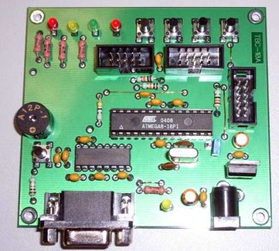
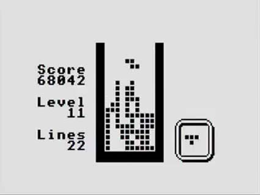
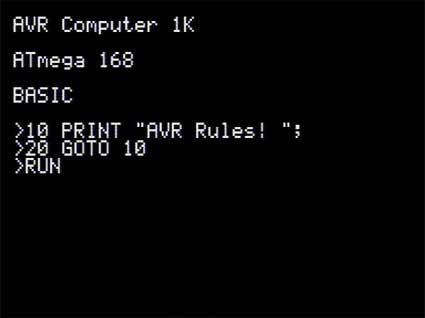
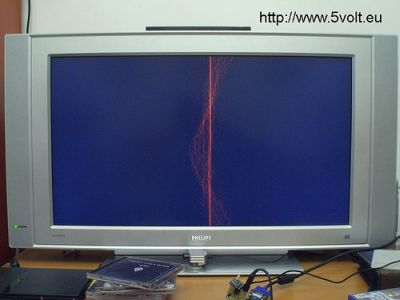
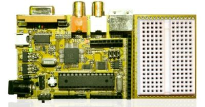
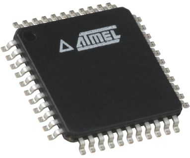
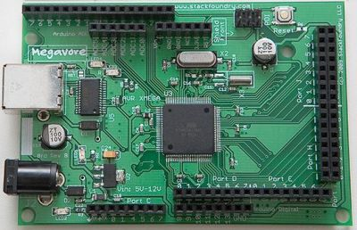
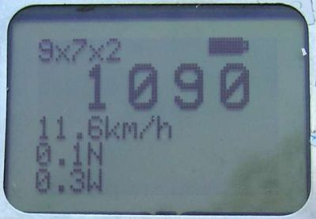

A weblog focused on interesting circuits, ideas, schematics and other information about microelectronics and microcontrollers.
E-books
Disclaimer
Because I have not tested all electronic circuits mentioned on this pages, I cannot attest to their accuracy; therefore, I do not provide a warranty of any kind and cannot be held responsible in any manner.
ATMEL AVR
Programmable BASIC controller
13. March 2010 - 14:28 — adminTiny Basic Controller (TBC) is a simple device that can operate as a PLC (program logic controller) for home automation, control, etc. The control program is a text version of BASIC language.

(Photo from cqham.ru)
TV Tetris and Snake on AVR
6. March 2010 - 13:09 — adminAnother piece (better say "Two in one") to my collection of simple TV games: Ben Ryves' Snake / Tetris, based on ATMega168.

Photo: Ben Ryves
TV Text display with ATMega168
27. February 2010 - 16:15 — adminTV display based on AVR ATMega168 by Ben Ryves.
Photo by Ben Ryves
Pyxis - an Arduino OS
3. February 2010 - 15:23 — adminThe thing I simply can't omit: Pyxis OS for an Arduino.
Waveform display on a VGA monitor with AVR
16. January 2010 - 16:29 — adminNot so useful, but nice: "Waveform display" (like a oscilloscope) on a VGA monitor.

(Photo: 5volt.eu)
Chameleon AVR system
21. December 2009 - 17:37 — adminThe game-oriented BASIC-Stamp and Arduino successor: cheap system with an AVR plus a Propeller together on a credit-card sized board.

SimAVR - free open source AVR simulator
18. December 2009 - 21:17 — admin"Small, mean and lean hackable AVR simulator".

Megavore
5. December 2009 - 19:05 — adminThe Megavore is an Atmel AVR xMEGA 128A1 development board, similar to Arduino (but not exactly pinout compatible).

Tachometer with a LCD from Nokia 5110
28. November 2009 - 2:26 — adminTen years ago was Nokia 5110 The Big Cellphone. Here is an useful recycling: Digital tachometer with a 5110 LCD.

(Source: Elfly.pl)
Homebrew AVR-based iPhone-like device
4. November 2009 - 20:00 — adminDon't be silly - you can't make an iPhone with an AVR at home, of course. But you can get a surprising amount of functionality out of a 8-bit processor and a cheap touch LCD.